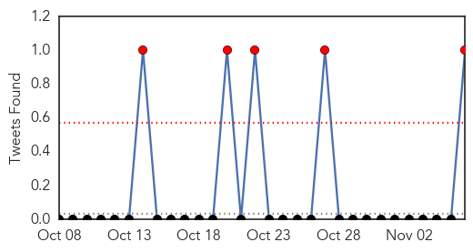

Influenza
30-Day Web Trend
0 alerts, 0 warnings

30-Day Twitter Trend
2 alerts, 0 warnings

Article Locations

Article Confidences
Top Articles:
- 0.996
- Take a shot in the arm to #FightfluBC
- 0.993
- New vaccine as more than 1000 reported flu cases cause headaches in Canberra
- 0.990
- First flu death of season reported in California
- 0.973
- Govt to roll out stronger flu jab in 2016
- 0.948
- Australia prepares for 2016 flu season after record number of cases in 2015 - Xinhua
- 0.943
- Flu Season Is Upon Us
- 0.934
- Protect Yourself Against the Flu
- 0.903
- More flu clinics scheduled starting Saturday
- 0.869
- Temporary bird import ban lifted
- 0.843
- Today's stories from newspapers in Parry Sound
- 0.825
- More flu cases reported, not too late to get a flu shot
- 0.800
- Today's stories from newspapers in Ottawa
- 0.800
- Today's stories from newspapers in Ottawa
- 0.794
- Trio who refused flu shots not fired yet — but probably will be
- 0.787
- Today's stories from newspapers in Orangeville
- 0.787
- Today's stories from newspapers in Orangeville
- 0.783
- Today's stories from newspapers in Norfolk County
- 0.751
- November 6, 2015 Archives
- 0.751
- November 6, 2015 Archives
- 0.751
- November 6, 2015 Archives
- 0.751
- November 6, 2015 Archives
- 0.751
- November 5, 2015 Archives
- 0.751
- November 5, 2015 Archives
- 0.751
- November 5, 2015 Archives
- 0.751
- November 5, 2015 Archives
- 0.751
- November 5, 2015 Archives
- 0.711
- Free influenza vaccination for elderly aged 65 or above to start on November 10
- 0.638
- UGA researchers identify essential component of antiviral defense
- 0.598
- Dog day care businesses hit by canine flu
- 0.516
- Canada’s First (and Female) Science Minister is a Badass – Phenomena
Top Tweets:
- 0.792
- FluFactFriday: So far, most circulating flu viruses this season are influenza A (H3N2) viruses. https://t.co/QifYwqPJiR
Bubonic Plague
30-Day Web Trend
1 alerts, 0 warnings
30-Day Twitter Trend
1 alerts, 0 warnings

Article Locations
Article Confidences

Top Articles:
Top Tweets:
-
No tweets found for Nov 06, 2015